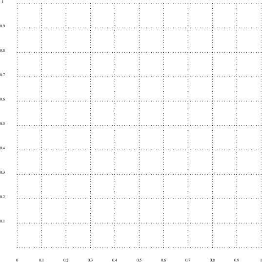

tinypge.py
#!/usr/bin/env python import pge, sys from pygame.locals import * print "starting pge" # pge.batch () pge.interactive () wood_light = pge.rgb (166.0/256.0, 124.0/256.0, 54.0/256.0) wood_dark = pge.rgb (76.0/256.0, 47.0/256.0, 0.0) red = pge.rgb (1.0, 0.0, 0.0) ball_size = 0.05 boarder = 0.01
tinypge.py
def myquit (e):
print "goodbye"
sys.exit (0)
def key_pressed (e):
if e.key == K_ESCAPE:
myquit (e)
def placeBoarders (thickness, color):
print "placeBoarders"
floor = pge.box (0.0, 0.0, 1.0, thickness, color).fix ()
left = pge.box (0.0, 0.0, thickness, 1.0, color).fix ()
right = pge.box (1.0-thickness, 0.0, thickness, 1.0, color).fix ()
top = pge.box (0.0, 1.0-thickness, 1.0, thickness, color).fix ()
return floor, left, right, top
tinypge.py
def main ():
pge.slow_down (6.0) # slows down real time by a factor of
top, left, right, top = placeBoarders (boarder, wood_dark)
pge.circle (0.6, 0.7, ball_size, red).mass (1.0)
print "before run"
pge.gravity ()
pge.draw_collision (True, False)
pge.register_handler (myquit, [QUIT])
pge.register_handler (key_pressed, [KEYDOWN])
pge.display_set_mode ([800, 800])
pge.run (10.0)
pge.finish_record ()
print "before main()"
main ()
marblepge.py
#!/usr/bin/env python import pge, sys from pygame.locals import * print "starting pge" # pge.batch () pge.interactive ()
marblepge.py
t = pge.rgb (1.0/2.0, 2.0/3.0, 3.0/4.0) wood_light = pge.rgb (166.0/256.0, 124.0/256.0, 54.0/256.0) wood_dark = pge.rgb (76.0/256.0, 47.0/256.0, 0.0) red = pge.rgb (1.0, 0.0, 0.0) green = pge.rgb (0.0, 1.0, 0.0) blue = pge.rgb (0.0, 0.0, 1.0) blue_dark = pge.rgb (0.1, 0.1, 0.8) steel = pge.rgb (0.5, 0.5, 0.5) copper = pge.rgb (0.5, 0.3, 0.2) gold = pge.rgb (0.8, 0.6, 0.15)
marblepge.py
ball_size = 0.02 boarder = 0.01 white = pge.rgb (1.0, 1.0, 1.0) gap = 0.01 captured = None sides = [] seconds_left = 120 previous = None
marblepge.py
def myquit (e):
print "goodbye"
sys.exit (0)
def key_pressed (e):
if e.key == K_ESCAPE:
myquit (e)
def delete_ball (o, e):
for b in e.collision_between ():
if b != o:
b.rm ()
new_barrel ()
marblepge.py
def placeBoarders (thickness, color):
print "placeBoarders"
floor = pge.box (0.0, 0.0, 1.0, thickness, color).fix ().on_collision (delete_ball)
e2 = pge.box (0.0, 0.0, thickness, 1.0, color).fix ()
e3 = pge.box (1.0-thickness, 0.0, thickness, 1.0, color).fix ()
e4 = pge.box (0.0, 1.0-thickness, 1.0, thickness, color).fix ()
return floor, e2, e3, e4
marblepge.py
def placeRamps ():
bot = pge.poly4 (0.95, 0.2,
0.15, 0.18,
0.15, 0.17,
0.95, 0.19, wood_dark).fix ()
mid = pge.poly4 (0.85, 0.4,
0.05, 0.42,
0.05, 0.43,
0.85, 0.41, wood_dark).fix ()
top = pge.poly4 (0.95, 0.7,
0.15, 0.68,
0.15, 0.67,
0.95, 0.69, wood_dark).fix ()
marblepge.py
def timer (e = None, param = None):
global seconds_left, previous
if seconds_left >= 0:
pge.at_time (1.0, timer)
s = "%d" % seconds_left
if previous != None:
previous.rm ()
previous = pge.text (0.8, 0.9, s, white, 100, 1)
seconds_left -= 1
marblepge.py
def new_barrel (e = None, param = None):
global gb
gb = pge.circle (0.9, 0.85, 0.03, steel).mass (1.25)
marblepge.py
def main ():
global gb, sides
placeRamps ()
pge.slow_down (6.0) # slows down real time by a factor of
timer ()
new_barrel ()
b1, b2, b3, b4 = placeBoarders (boarder, wood_dark)
print "before run"
pge.gravity ()
pge.draw_collision (False, False)
pge.register_handler (myquit, [QUIT])
pge.register_handler (key_pressed, [KEYDOWN])
pge.display_set_mode ([800, 800])
pge.run (seconds_left/6.0+4.0)
pge.finish_record ()
marblepge.py
print "before main()" main ()
This document was produced using groff-1.22.